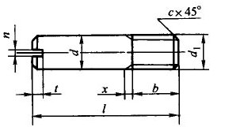

螺纹圆柱销(摘自GB/T 878-2000)
 |
d(公称）h13 |
d1 |
b max |
n(公称尺寸) |
t max |
x max |
c ≈ |
l(商品规格范围) |
4 |
M4 |
4.4 |
0.6 |
2.05 |
1.4 |
0.6 |
10～14 |
6 |
M6 |
6.6 |
1 |
2.8 |
2 |
1 |
12～20 |
8 |
M8 |
8.8 |
1.2 |
3.6 |
2.5 |
1.2 |
14～28 |
10 |
M10 |
11 |
1.6 |
4.25 |
3 |
1.5 |
18～35 |
12 |
M12 |
13.2 |
2 |
4.8 |
3.5 |
2 |
22～40 |
16 |
M16 |
17.6 |
2.5 |
5.5 |
4 |
2 |
24～50 |
18 |
M20 |
22 |
3 |
6.8 |
5 |
2.5 |
30～60 |
注：
1．标记示例：公称直径d=10mm、公称长度l=30mm、材料为35钢、热处理硬度28～38HRC、表面氧化处理的螺纹圆柱销：
销 GB/T878 10×30
2．本表的单位是mm。